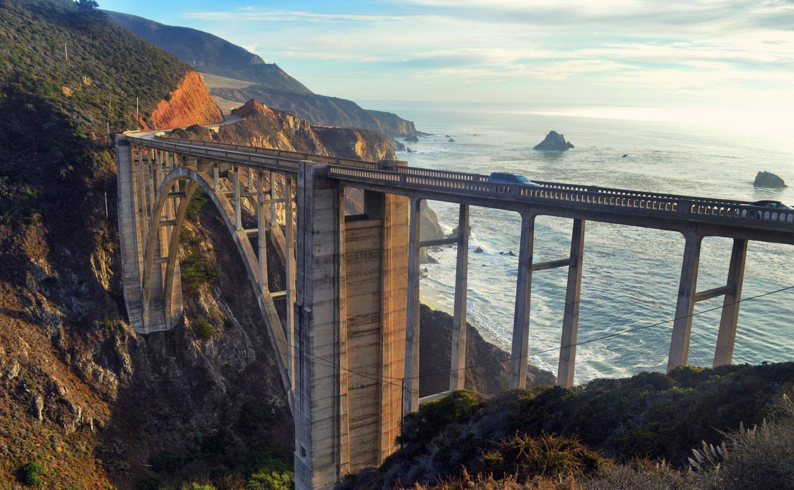
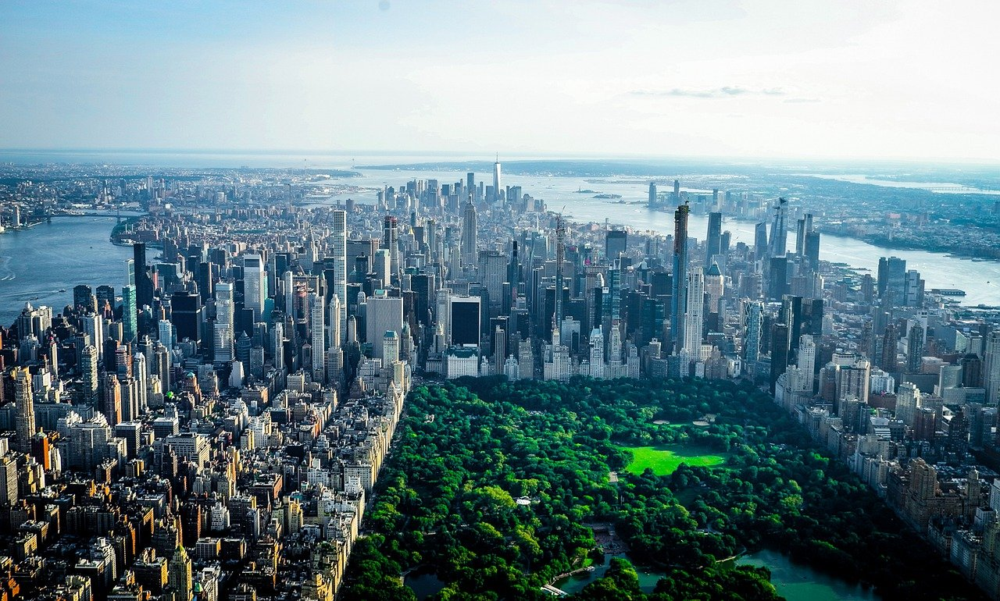
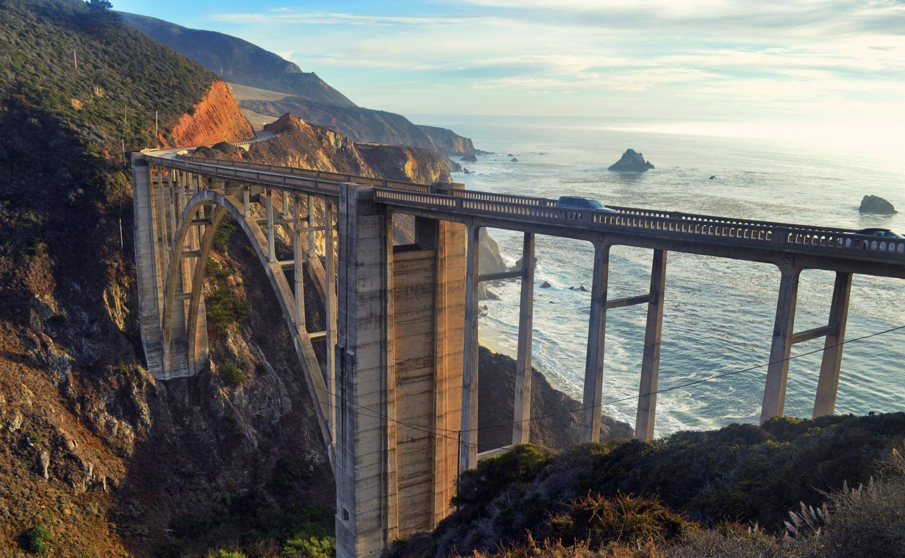
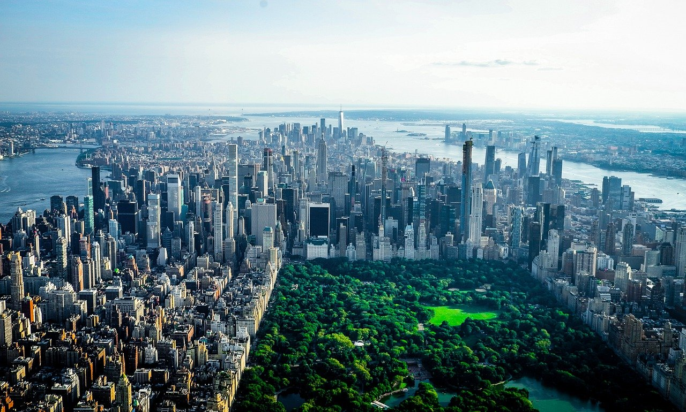

Ocean City se nalazi u saveznoj državi Maryland. Kilometarske plaže,
šetalište, noćniživot, pregršt poslova samo su neke od stvari koje ovu destinaciju čine izuzetno atraktivnom među
našim studentima.
Grad je relativno mali po broju stanovnika (svega 7000 stalnih stanovnika),
međutim ujedno je i dosta velik jer se prostire uz obalu. Tokom leta, populacija mesta naraste i do 350000 kada dođu
svi turisti i sezonski radnici.
Šta nudi Ocean City? Ocean City ima peščanu plažu dugu 16 km i jedno od najlepših šetališta (Boardwalk) u SAD-u,
prema USA Today i Nacionalnoj Geografiji. Šetalište je dugo tri milje i jedno je od glavnih atrakcija grada.
Ovaj grad je veoma privlačan za sve ribolovce – svake godine se održava ribolovački turnir,
a nagrade nekada dostignu i cifru od million dolara.
Ocean City je sjajna turistička destinacija koja privlači ogroman
broj turista kao i mladih ljudi iz celog sveta koji su u potrazi za sezonskim zaposlenjem

Boston, poznat kao “Grad na brdu”, je jedan od najstarijih gradova u Sjedinjenim Američkim Državama,
bogat istorijom, kulturom i obrazovanjem. Ovaj grad nudi savršenu mešavinu istorijskih znamenitosti,
modernih atrakcija, prestižnih univerziteta i dinamičnog gradskog života.
- Boston pruža studentima priliku da:
- Istraže bogatu američku istoriju kroz čuvene istorijske staze kao što je Freedom Trail.
- Stiču iskustvo rada u jednom od najvećih i najdinamičnijih gradova SAD-a.
- Uživaju u kulturnim događanjima, od poseta muzejima do učestvovanja u raznovrsnim festivalima i događajima.

Miami, Florida, nudi studentima Work and Travel programa jedinstvenu priliku da provedu leto uživajući u tropskom raju.
Ovaj živahni grad nudi ne samo prelepe plaže i kristalno čisto more, već i živopisnu kulturu,
bogat noćni život i raznovrsnu gastronomiju.
Studenti će imati priliku da rade u jednom od najpopularnijih turističkih destinacija u SAD-u,
istovremeno istražujući jedinstvenu mešavinu kultura i uživajući u brojnim sunčanim danima.
- Miami nudi studentima Work and Travel programa razne prednosti:
- Prelepe Plaže i Opuštanje na Suncu: Uživajte na poznatim plažama kao što su South Beach i Miami Beach, idealnim za sunčanje, plivanje i vodene sportove.
- Dinamična Kultura i Noćni Život: Upustite se u svet latino ritmova, posetite modne revije i uživajte u brojnim klubovima i barovima koji čine Miami jednim od vodećih centara za noćni život.
- Kulturna Raznolikost i Gastronomija: Istražite uticaje različitih kultura u hrani, muzici i umetnosti koje čine Miami jedinstvenim.

New York City nudi studentima Work and Travel programa priliku da provedu ljeto radeći i istražujući jedan od najuzbudljivijih i
najdinamičnijih gradova na svetu.
Poznat po svojim neboderima, širokim avenijama i kulturološkoj raznolikosti, New York pruža jedinstveno iskustvo života u urbanom okruženju,
sa nebrojenim prilikama za upoznavanje nove kulture, umrežavanje i profesionalni razvoj. Od poseta svetski poznatim muzejima i galerijama do uživanja u širokom spektru kulturnih događanja,
New York City je mesto gde studenti mogu u potpunosti uroniti u američki način života.

Za San Francisko se može reći mnogo stvari, ali jedna osobina je ključna – ovaj gradje,
pre svega, unikatan. San Francisko se nalazi na obali Tihog Okeana, u severnom delu savezne države Kalifornije.
Njegova pozicija na samom mestu između okeana i zaliva je razlog za odličnu mikro-klimu,
koja uglavnom daje temperature između 20 i30 stepeni tokom cele godine. Sa oko 880 000 stanovnika na samo 121 km2,
San Francisko je najgušće naseljeni grad u SAD posle Njujorka.Osnovan 1776. godine,
San Francisko je doživeo procvat posle Zlatne Groznice u 1849. godini, posle čega je dugo vremena
bio najveći grad na zapadnoj obali. Sledeći bitan momenat u istoriji je zemljotres koji je potresao i uništio
tri četvrtine grada 1906. godine, ali San Francisko je brzo podignut na noge.Kroz svoju istoriju,
San Francisco je uvek privlačio inovatore, umetnike i vizionare i bio mesto nastanka mnogih istorijskih pokreta,
od kojih je najskoriji tehnološka revolucija, koja je dovela do eksplozije IT inovacije i nastanka Silikonske doline,
sedišta mnogih modernih tehnoloških kompanija

 


